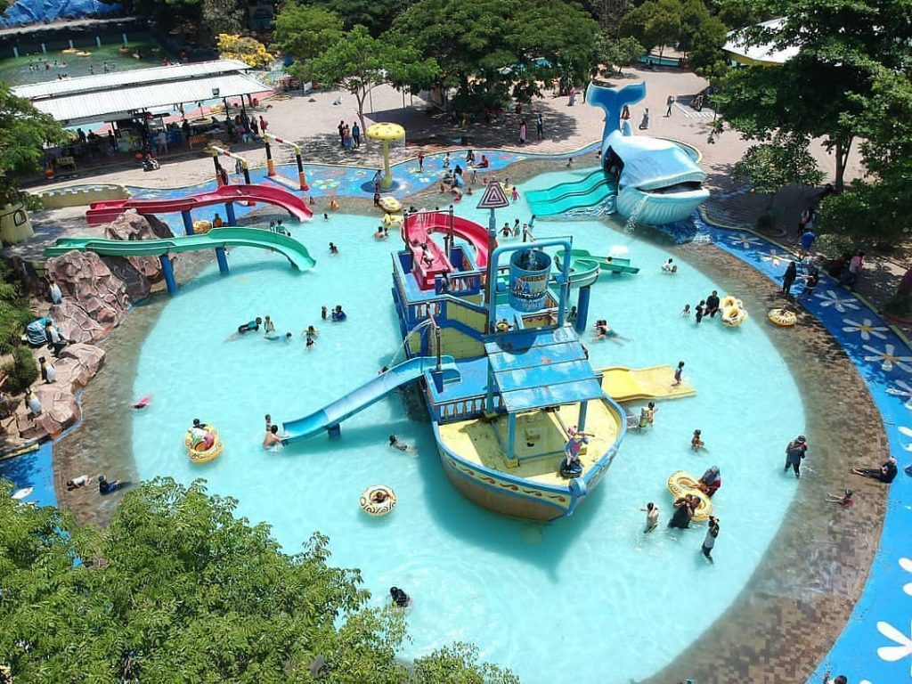

Gallery



Tegal is a large city in the northwest part of Central Java Province of Indonesia. It is situated on the north coast (or pesisir) of Central Java, about 175 kilometres (109 mi) from Semarang, the capital of the province. It had a population of 239,599 at the 2010 Census and 276,734 at the 2015 Census. Its built-up (or metro) area made up of Tegal Municipality and 12 districts spread over Tegal and Brebes Regencies was home to 1,366,858 inhabitants as of 2010 census. It is administratively separate from Tegal Regency, which borders it to the south and east; Brebes Regency borders it to the west.
The Dutch East Indies colonial sugar industry originated in Tegal and the nearby city of Pekalongan, approximately 50 kilometres (31 mi) to the east. Tegal Regency remained a major sugar production center until the mid-20th century. The city served as a port for exporting sugar produced on the nearby plantations. Tegal is famous for its warung, commonly called "warteg" or warung tegal. It is also known for its tea products, such as teh botol Sosro, Tong Tji tea, 2 Tang tea, Gopek tea and other brands.
Tegal has its own language, known as Bahasa Tegal. Tegal language has a resemblance to the language of Banyumas ( ngapak ) that is in the vocabulary. However, people in Tegal are reluctant to use ngapak as a term of the language, due to their dialectical difference. People using Tegal language include: northern part of Tegal regency, Tegal City, western part of Pemalang regency, and eastern part of Brebes district. The first Tegal language Congress was held by the Tegal City government on April 4, 2006, at the Bahari Inn hotel. The event which was initiated by Yono Daryono presented several figures such as SN Ratmana (cerpenis), Ki Enthus Susmono (dalang Tegal), Eko Tunas (Tegal poet), Dwi Ery Santoso (Poetry and Director). The purpose of the congress was to raise the status of the Tegalan dialect into Tegal language. Some Indonesian comedians speak it because its accent and dialect arouse amusement. One example is the translation of the greeting phrase "How are you?" into "Kepriben kabare?".
VISIT WEBSITE